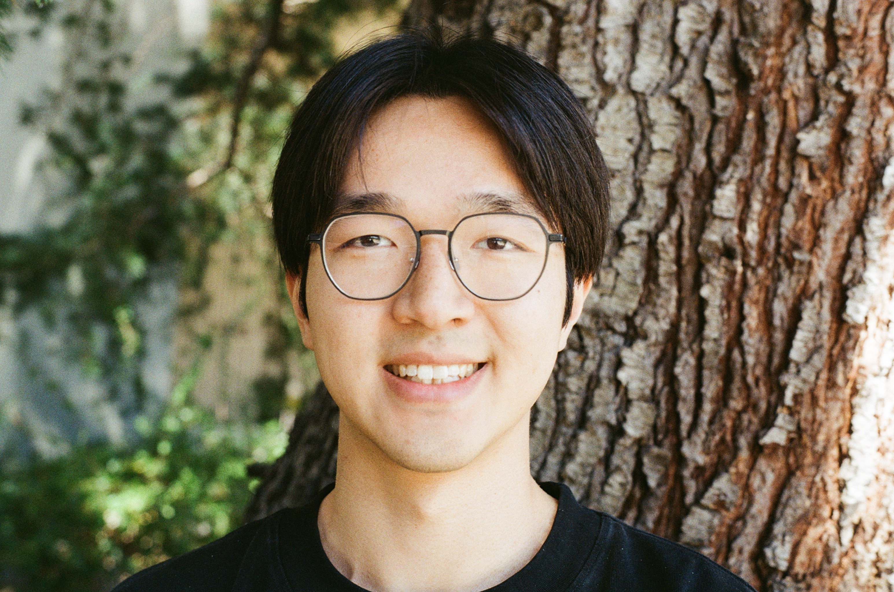

I am a Charles B. Morrey, Jr. Math Fellow at UC Berkeley under the mentorship of Maciej Zworski. I am generally interested in microlocal analysis and PDEs. I was previously a graduate student of Semyon Dyatlov at MIT.
My email is zli1010 at berkeley dot edu.

Evolution of internal waves in a 2D subcritical channel
with
Jian Wang and Jared Wunsch
Preprint (2025).
(arXiv)
Internal waves in a 2D subcritical channel
with
Jian Wang and Jared Wunsch
Preprint (2025).
(arXiv)
Long time quantum—classical correspondence for open systems in trace norm
Annales Henri Poincaré (2025).
(arXiv)
Internal waves in aquariums with characteristic corners
Pure and Applied Analysis, 7(2025), 445-534.
(arXiv)
Internal waves in 2D domains with ergodic classical dynamics
with
Yves Colin de Verdière
Probability and Mathematical Physics, 5(2024), 735-751.
(arXiv)
2D internal waves in an ergodic setting
Preprint (2023).
(arXiv)
Weyl laws for open quantum maps
Journal of Spectral Theory, 12(2022), 1541–1566.
(arXiv)
Uniqueness of excited states to $-\Delta u + u - u^3 = 0$ in three dimensions
with
Alex Cohen
and
Wilhelm Schlag,
Analysis and PDEs, 17(2024), 1887-1906.
(arXiv, GitHub)
Dynamic transitions of the Swift-Hohenberg equation with third-order dispersion
Discrete and Continuous Dynamical Systems-B, 26(2021), 6069-6090.
(arXiv)
Certain hyperbolic regular polygonal tiles are isoperimetric
with Jack Hirsch, Jackson Petty, and Christopher Xue,
Geometriae Dedicata, 214(2021), 65-77. (arXiv)
The optimal double bubble for density $r^p$
with Jack Hirsch, Jackson Petty, and Christopher Xue, Rose-Hulman Undergraduate Mathematics Journal, 22(2021). (arXiv)
Optimal monohedral tilings of hyperbolic surfaces
Leonardo Di Giosia, Jahangir Habib, Jack Hirsch, Lea Kenigsberg, Dylanger Pittman, Jackson Petty, Christopher Xue, Weitao Zhu, Rose-Hulman Undergraduate Mathematics Journal, 24(2023). (arXiv)
A quick introduction to b-Calculus
based on lectures given at SLMath with Semyon Dyatlov